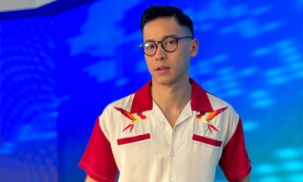

Joshua Garcia and vlogger Bella Racelis spark dating rumors
MANILA, Philippines – Joshua Garcia got his followers buzzing with dating rumors after posting photos of vlogger Bella Racelis.
On Tuesday, September 6, the actor shared a reel on his separate photography account JG IMAHE. The video featured a compilation of
Bella’s photos in black and white, as well as colored versions, and a short clip of the vlogger walking ahead and laughing.
In the caption, Joshua only mentioned the type of camera he used for the video, but he did tag Bella’s Instagram account in the post.
Relationship speculations between the two started in August, when a video of them getting cozy at a party circulated online. The two were
also seen leaving several comments on each other’s Instagram posts.
The two have yet to address the dating rumors as of posting. Joshua, who is best known for his roles in television series The Greatest Love,
Ngayon at Kailanman, The Killer Bride, and Darna, was previously in a relationship with actress Julia Barretto. They broke up in 2019. Meanwhile,
Bella, more known to fans as ThatsBella, is known for her beauty, fashion, and lifestyle vlogs.

Xian Lim deletes YouTube videos as breakup rumors with Kim Chiu continue circulating --
Xian Lim has taken down almost all of his YouTube videos, eagle-eyed netizens noticed on Tuesday, December 12.
Lim’s YouTube channel now only features one full-length Draw My Life video posted in 2016, where the actor details
key moments in his life, from moving to the US and back to the Philippines to play basketball, to landing his first
audition as an actor.
Other than this, he also has two YouTube shorts up on his channel: an inspirational self-improvement
video and a montage of him driving around on his motorcycle.
Lim has also disabled the comment function on all his Instagram posts.
While the 34-year-old actor has yet to directly address the breakup speculations, he had earlier shared a statement calling on
everyone to be mindful of hearsay and deceitful headlines.
In the same statement, he also said that he will continue to find and search for his voice and work on becoming the best version of himself.
Lim first rose to fame in 2009 after starring as Albert Arcanghel in the teleserye Katorse. He has since starred in numerous shows and films
alongside Chiu, such as My Binondo Girl, Bakit Hindi Ka Crush Ng Crush Mo, Bride For Rent, and Love Thy Woman. He and Chiu began dating in 2012
but only confirmed their relationship to the public in 2018.

Buhay ang pelikulang Pilipino’: Enchong Dee expresses gratitude over success of ‘GomBurZa
'I know that this film will go beyond my life and for that, I’m eternally grateful,' Enchong, who plays Father Zamora, says
MANILA, Philippines – Enchong Dee expressed in an Instagram post on Monday, January 8, his gratitude over the success of the 2023 Metro Manila Film Festival (MMFF) entry GomBurZa.
Enchong’s post includes a series of behind-the-scenes shots during the film’s production, along with photos from its promotion period.
“For days now, [I’ve been] in so much awe! Still trying to comprehend ‘yung pagmamahal ninyo sa [GomBurZa] (Your love for GomBurZa). Hindi pa [siya] nag-register sa utak ko (It hasn’t registered in my mind yet),” Enchong wrote.
Enchong, who starred as Father Jacinto Zamora in GomBurza, shared that he had the opportunity to work with a “respectful, dedicated, and hardworking team” all throughout the culmination of the film.

Jiro Manio sells Gawad Urian trophy for ‘Magnifico’ performance on ‘Pinoy Pawnstars’
The award, which Manio won for his performance in the 2003 film 'Magnifico,' is sold to Boss Toyo for P75,000
MANILA, Philippines – Former child actor Jiro Manio sold his Gawad Urian Best Actor Award trophy for his performance in the 2003 film Magnifico.
In an episode of the YouTube series Pinoy Pawnstars on Tuesday, January 2, Manio showed his Gawad Urian trophy to showrunner Boss Toyo to gauge how much he could sell it for.
While Manio had hoped to sell the trophy for P500,000, Boss Toyo explained that if he were to purchase Manio’s trophy for that price, he would have to consider whether any of
his buyers would be willing to pay that much for it in the next few years.
Boss Toyo named P50,000 as a starting price, but the two eventually settled on a final price of P75,000.
“No’ng napanood kita, sabi ng utol ko na magtatayo ka raw ng museum. Naisip ko, ‘Sana mapabilang ako do’n sa mga dating artista na nakatanggap ng award,'” Manio told Boss Toyo.
Boss Toyo also detailed the respect he holds for Manio, who he believes made significant contributions to the Filipino film industry.